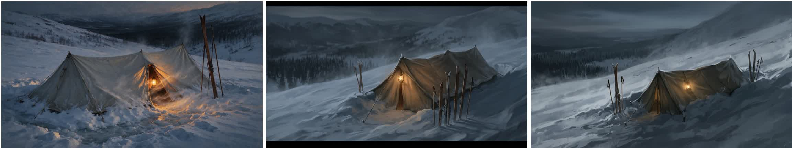
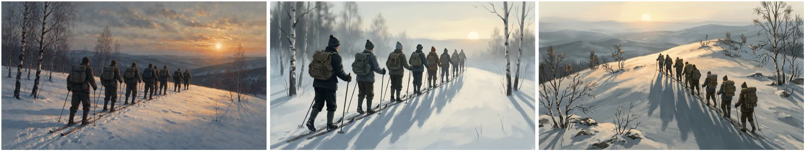

We make illustrated history explainers for HoneyStorm History. Each video has about 20 painted scenes, so the image model is the biggest line in the bill. We asked: is a cheaper model good enough, judged by someone who doesn't know which is which? This is a small test (two scenes, one judge), so treat it as a practical read, not a benchmark.
How we tested
- Same prompt, different models. Every model got exactly the same prompt, aspect ratio and settings. No re-rolls, no cherry-picking: the first image each model returned is the one shown.
- Blind. The images were placed side by side in a random order, labelled only X, Y and Z. The judge, the person who runs the channels, picked a favourite before the models were revealed.
- Real costs. Prices are what we were actually billed per image that day. They're not list prices, and they will change.
The test
The job: two scenes for an upcoming video on the Dyatlov Pass incident of 1959, in our channel's painted, cinematic style. Scene 1: the hikers' long, low tent half buried in snow at dusk, a lantern glowing inside. Scene 2: nine hikers seen from behind, skiing up a ridge in late-afternoon light.




| Blind label (left → right) | Model | Cost per image | Output size | Judge's rank |
|---|---|---|---|---|
| X | Seedream 5.0 Flash (ByteDance) | $0.018 | 2048 × 1152 | 1st |
| Y | Nano Banana 2 (Gemini 3.1 Flash Image) | $0.067 | 1376 × 768 | 2nd |
| Z | Nano Banana 2.1 | $0.037–0.041 | 1376 × 768 | 3rd |
The judge: "X is the best, Y is middle."
What we noticed: Seedream gave the warmest, most dramatic light. None of the three got the real tent's long, low shape on the first try; in a later run with a reference sheet, Seedream held it. It's also the only one that returned a 2K image by default, which matters because our videos are 1080p and the 1K images get upscaled. The cheapest model won on quality, at about a quarter of the cost.
The caveat we're checking next: these scenes were made from text alone. In production, every scene is drawn from a character sheet so the same people look the same across 20 scenes. A model that paints a beautiful single frame can still drift between scenes, so that's the next thing we're testing.
What we changed
Painted history scenes move from Nano Banana 2 to Seedream 5.0 Flash: about 73 % less per image, at twice the resolution. With 20 scenes, the images for a video drop from about $1.34 to about $0.36.
What we learned
- Blind beats specs. Nobody on the team would have predicted the cheapest model to come first.
- Test the style you actually make. The same model came last in our realistic-portrait test.
- Quality has to show up in the numbers. So we're running a follow-up: about 75 % of our next history videos are made with the cheaper models and 25 % with the original ones, picked at random. After enough are published, we compare watch time, retention and click-through by group. If the more expensive models don't earn its cost in viewer behaviour, it goes. We'll report the result here.
Want to see the result? The Dyatlov Pass is out now on HoneyStorm History.